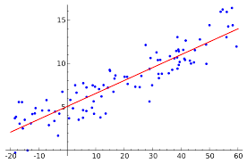

Tema 1
Estadística Descriptiva
1.1 Conceptos Básicos de Estadística
- Definición: La estadística es la ciencia que se encarga de recopilar, organizar, analizar e interpretar datos.
- Teoría de Decisión: Principios y métodos para tomar decisiones óptimas en presencia de incertidumbre.
- Población: Conjunto total de elementos que comparten una o más características.
- Muestra Aleatoria: Subconjunto representativo de una población, seleccionado de manera aleatoria.
- Parámetros Aleatorios: Características numéricas de una población, como la media o la desviación estándar.
1.2 Descripción de Datos
- Datos Agrupados y No Agrupados: Datos sin organizar y datos organizados en intervalos o clases.
- Frecuencia de Clase: Número de datos que caen dentro de cada intervalo.
- Frecuencia Relativa: Proporción de datos que caen dentro de cada intervalo.
- Punto Medio: Valor medio de cada intervalo.
- Límites: Valores máximo y mínimo de cada intervalo.
1.3 Medidas de Tendencia Central y Dispersión
- Media Aritmética: Es una medida de tendencia central. Se define como la suma de todos los valores de un conjunto de datos dividida entre el número total de valores.
- Geométrica: Es otra medida de tendencia central, se obtiene multiplicando todos los valores y luego extrayendo la raíz enésima.
- Ponderada: Es una medida de tendencia central que se utiliza cuando se quiere dar mayor importancia o "peso" a algunos valores del conjunto de datos sobre otros.
- Mediana: Valor central de los datos ordenados.
- Moda: Valor que aparece con mayor frecuencia.
- Varianza y Desviación Estándar: Medidas de dispersión.
- Desviación Media y Desviación Mediana: Otras medidas de dispersión.
- Rango: Diferencia entre el valor máximo y mínimo.
1.4 Parámetros para Datos Agrupados
- Cálculo de medidas de tendencia central y dispersión cuando los datos están agrupados en intervalos.
1.5 Distribución de Frecuencias
- Organización de los datos en intervalos o clases.
- Cálculo de frecuencias absolutas y relativas.
1.6 Técnicas de Agrupación de Datos
- Métodos para determinar el número y tamaño de los intervalos.
1.7 Técnicas de Muestreo
- Métodos para seleccionar muestras representativas de una población.
1.8 Histograma
- Los histogramas son una forma simple pero efectiva de visualizar la distribución de una variable numérica, proporcionan una imagen visual de cómo se distribuyen los datos en diferentes rangos de valores e igualmente permiten identificar patrones, tendencias y anomalías en los datos.
Tema 2
Fundamentos de la teoría de Probabilidead
2.1 Técnicas de conteo
- Definición:Las técnica de conteo son procedimientos sistemáticos utilizadas para determinar el número total de resultados posibles a partir de combinaciones de elementos de uno o más conjuntos.
- 2.1.1 Pincipio aditivo:Establece que si un evento puede ocurrir de n maneras diferentes y otro evento puede ocurrir de m maneras diferentes, y estos eventos son mutuamente excluyentes, entonces el número total de maneras en que uno de los dos eventos puede ocurrir es la suma de n y m.
- 2.1.2 Principio multiplicativo:Establece que si una tarea se puede realizar de n maneras diferentes y otra tarea se puede realizar de m maneras diferentes, entonces el número total de maneras de realizar ambas tareas es el producto de n y m.
- 2.1.3 Notacion Factorial:Representa el producto de todos los números enteros positivos desde 1 hasta un número dado. Se denota como n! y se lee "n factorial".
- 2.1.4 Permutaciones: La ieren a la forma de ordenar un número determinado de elementos. La fórmula para calcular el número de permutaciones de n elementos es n!.
- 2.1.5 Combinaciones: Características numéricas de una población, como la media o la desviación estándar.
- 2.1.6 Diagrama de Árbol:Un diagrama de árbol es una representación gráfica de todas las posibles secuencias de eventos que pueden ocurrir en una situación. 2.1.7 Teorema del binomio: El teorema del binomio establece que la expansión de (a + b)^n es una suma de términos, cada uno de los cuales es el producto de un coeficiente y una potencia de a y una potencia de b.
2.2 Teoría elemental de probabilidad:
- Esta teoría se encarga de estudiar experimentos aleatorios, es decir, experimentos donde el resultado es incierto y hay más de un posible resultado. Su objetivo es medir probabilidades relacionadas con fenómenos aleatorios, asignando a cada probabilidad un número entre 0 y 1. Cuanto más alta sea la probabilidad, más probable será que ocurra el evento.
- Espacio Muestral:Las técnica de conteo son procedimientos sistemáticos utilizadas para determinar el número total de resultados posibles a partir de combinaciones de elementos de uno o más conjuntos.
- Pincipio aditivo:Establece que si un evento puede ocurrir de n maneras diferentes y otro evento puede ocurrir de m maneras diferentes, y estos eventos son mutuamente excluyentes, entonces el número total de maneras en que uno de los dos eventos puede ocurrir es la suma de n y m.
- Principio multiplicativo:Establece que si una tarea se puede realizar de n maneras diferentes y otra tarea se puede realizar de m maneras diferentes, entonces el número total de maneras de realizar ambas tareas es el producto de n y m.
- Notacion Factorial:Representa el producto de todos los números enteros positivos desde 1 hasta un número dado. Se denota como n! y se lee "n factorial".Permutaciones: Las permutaciones se
- Permutaciones: La ieren a la forma de ordenar un número determinado de elementos. La fórmula para calcular el número de permutaciones de n elementos es n!.
- Combinaciones: Características numéricas de una población, como la media o la desviación estándar.
-
Axiomas:
Axioma 1: Si “A” es un evento cualquiera asociado A un espacio muestral S, entonces: 0 <= P(A) <= 1 Esto es, la probabilidad de un evento cualquiera está definida en el intervalo cerrado de 0 a 1.
P(A) --> [ 0 , 1 ]
Axioma 2: La probabilidad del suceso “espacio muestral” es igual a la unidad. Si S es el espacio muestral de un experimento, entonces: P(S) = 1 Evento seguro: Es todo suceso donde se tiene la certeza total de que éste ocurre, por lo tanto, su probabilidad es igual a 1. Si el evento “A” es que un ser humano muera su probabilidad será: P(A) = 1
Evento Imposible: Es todo evento del cual se tiene la certeza absoluta de que no ocurre, por lo tanto, su probabilidad es cero (nula). Si el evento “A” consiste en obtener un estudiante con una medida de 5 metros de estatura al seleccionarlo de un grupo, su probabilidad será: P(A) = 0.
-
La probabilidad condicional se refiere a la probabilidad de que ocurra un evento dado que otro evento ha ocurrido. Existen dos tipos de relaciones entre eventos en términos de probabilidad condicional: dependencia e independencia.
Eventos Dependientes:
Los eventos dependientes ocurren cuando una acción elimina un resultado posible, y el resultado no es devuelto antes de que se suceda una segunda acción. A esto se le llama elección sin devolución.Eventos independientes:
Se dice 2 sucesos aleatorios son independientes entre sí cuando la probabilidad de cada uno de ellos no ésta influida porque el otro suceso ocurra o no, es decir, cuando ambos sucesos no estas correlacionados. - Esta es una ley simple que puede ser aceptada en forma intuitiva. Esta ley no es válida para eventos que son dependientes entre sí, lo que es sujeto de Probabilidad condicional y Teorema de Bayes. Se utiliza cuando se necesita saber cuál es probabilidad de que dos sucesos A y B ocurran al mismo tiempo. Para aplicar esta ley es necesario saber si los sucesos A y B son independientes o dependientes.
- La regla de Bayes se utiliza para calcular la probabilidad condicional de un evento, la regla se expresa matemáticamente como;
P(A|B) = P(A|B)*P(A) / P(B)
- Definición:Son aquellas que pueden tomar un número finito o infinito contable de valores, generalmente enteros.
- 3.1.1 Distribución de probabilidad en forma general:Describe la probabilidad de ocurrencia de cada valor posible de una variable aleatoria discreta. Cada valor puede estar asociado con una probabilidad distinta de cero y se suele representar en forma tabular.
- 3.1.2 Valor esperado:Es la media ponderada de los valores que puede tomar X, usando las probabilidades como pesos. Representa el valor promedio que se espera obtener.
- 3.1.3 variancia, desviación estándar:Mide la dispersión de los valores de X alrededor de su valor esperado. Es el valor esperado del cuadrado de la desviación de X respecto a su media. La desviación estándar es la raíz cuadrada de la variancia
- 2.1.4 Función acumulada:Es la probabilidad de que X sea menor o igual a un valor x dado. Es una función no decreciente que toma valores entre 0 y 1
- Definición:Estas variables pueden tomar cualquier valor dentro de un intervalo de números reales, a diferencia de las discretas que solo pueden tomar ciertos valores. Su distribución de probabilidad se especifica mediante una función de densidad.
- 3.2.1 Distribución de probabilidad en forma general:Describe las probabilidades de los posibles valores de una variable aleatoria continua. Una variable continua tiene un rango infinito y no contable de valores posibles. Las probabilidades se definen como el área bajo la curva de su función de densidad de probabilidad.
- 3.2.2 Valor esperado:Es el centro de gravedad de la distribución de probabilidad. Es el valor promedio que se espera obtener si se repite el experimento un gran número de veces.
- 3.2.3 variancia, desviación estándar:La variancia de una variable aleatoria continua X mide la dispersión de los valores de X alrededor de su valor esperado. Es el valor esperado del cuadrado de la desviación de X respecto a su media.
- 2.2.4 Función acumulada:Es la probabilidad de que X sea menor o igual a un valor x dado. Es una función no decreciente que toma valores entre 0 y 1. Es la integral de la función de densidad desde menos infinito hasta x.
- 2.2.5 Cálculos de probabilidad:Para calcular probabilidades con variables continuas, se utilizan integrales de la función de densidad en los intervalos de interés. La probabilidad de que X esté entre dos valores a y b es el área bajo la curva entre esos valores.
- 5.1.1 Diagrama de dispersión: Es una representación gráfica que muestra la relación entre dos variables. Se utiliza para determinar si existe una relación entre las variables y, si es así, qué tipo de relación es.
-
5.1.2 Regresión Lineal Simple: Es una técnica estadística que permite modelar la relación entre una variable dependiente (Y) y una variable independiente (X). El modelo de regresión lineal simple tiene la forma:
Y = a + bX
-
5.1.3 La Correlación: Mide el grado de relación lineal entre dos variables. El coeficiente de correlación, denotado por r, varía entre -1 y 1:
- r = 1 indica una correlación positiva perfecta
- r = -1 indica una correlación negativa perfecta
- r = 0 indica que no hay correlación lineal entre las variables
- 5.1.4 Determinación y Análisis de los Coeficientes de Correlación y Determinación: El coeficiente de determinación, R^2, mide la proporción de la variabilidad de la variable dependiente Y que es explicada por la variable independiente X en el modelo de regresión lineal. Varía entre 0 y 1, y cuanto más cerca esté de 1, mejor será el ajuste del modelo.
- 5.1.5 Distribución Normal Bidimensional: La distribución normal bidimensional describe la distribución conjunta de dos variables aleatorias normalmente distribuidas. Esta distribución se utiliza para modelar la relación entre dos variables y realizar inferencias sobre los parámetros del modelo.
- 5.1.6 Intervalos de Confianza y Pruebas para el Coeficiente de Correlación: Se pueden construir intervalos de confianza y realizar pruebas de hipótesis para determinar si el coeficiente de correlación es significativamente diferente de cero. Esto permite evaluar la fuerza y significancia de la relación lineal entre las variables.
- 5.1.7 Errores de Medición: Los errores de medición en las variables pueden afectar la estimación de los coeficientes de regresión y correlación. Existen técnicas estadísticas, como el análisis de errores en variables, que permiten lidiar con este problema.
2.3 Probabilidad de Eventos:
2.4 Probabilidad con Técnicas de Conteo:
Axioma 3: Si “A” y “B” son dos eventos ajenos, la probabilidad de que ambos ocurran es la suma de sus respectivas probabilidades. P(A U B) = P(A) + P (B).
Axioma 4: El conjunto que no posee elementos (vacío Ø ), es un evento imposible, su probabilidad es cero. P ( Ø ) = 0
Axioma 5: Llamado regla de la complementación. Si “A” es un evento cualquiera y Ac es el complemento de “A” en un espacio muestral “S”, la suma de sus respectivas probabilidades es igual a P(A) + P (Ac ) = 1
Donde P(A) = 1 - P (Ac ) P (Ac ) = 1 – P(A)
Teoremas: El teorema de la probabilidad total permite calcular la probabilidad de que ocurra un evento, que se puede realizar a través de varios caminos.2.5 Probabilidad condicional: Dependiente, Independiente:
2.6 Ley multiplicativa:
2.7 Eventos independientes: Regla de Bayes:
Tema 3
Variables Aleatorias
3.1 Variables aleatorias discretas
3.2 Variables aleatorias continuas
Video explicativo del tema 3 "Discretas"
Variables aleatorias discretasVideo explicativo del tema 3 "Continuas"
Variables aleatorias continuasTema 4
Distribuciones de Probabilidad
4.1 Función de probabilidad
-
Describe la probabilidad de que una variable aleatoria tome un valor específico.
diferentes tipos de funciones de probabilidad, dependiendo del tipo de variable aleatoria que se esté analizando,
las funciones de probabilidad pueden ser discretas (para variables aleatorias discretas) o continuas (para variables aleatorias continuas).
4.2 Distribución binomial
Esta se utiliza para modelar el número de éxitos en un número fijo de ensayos independientes, donde cada ensayo tiene solo dos posibles resultados (éxito o fracaso). Los parámetros clave son el número de ensayos (n) y la probabilidad de éxito en cada ensayo (p).
4.3 Distribución hipergeométrica
Se utiliza para modelar el número de éxitos en un muestreo sin reemplazo de una población finita. Los parámetros clave son el tamaño de la población (N), el número de elementos de interés en la población (K), y el tamaño de la muestra (n).
4.4 Distribución de Poisson
Se utiliza para modelar el número de eventos que ocurren en un intervalo de tiempo o espacio, cuando los eventos ocurren de manera independiente y a una tasa constante. El parámetro clave es la tasa media de ocurrencia de los eventos (λ).4.5 Distribución normal
La distribución normal, también conocida como distribución gaussiana, es una de las distribuciones de probabilidad más importantes y ampliamente utilizadas, Se caracteriza por ser simétrica, unimodal y continua. Los parámetros clave son la media (μ) y la desviación estándar (σ).4.6 Distribución T-student
se utiliza cuando se trabaja con muestras pequeñas y la desviación estándar de la población es desconocida, se emplea en la construcción de intervalos de confianza y en pruebas de hipótesis. Los parámetros clave son la media (μ), la desviación estándar de la muestra (s) y los grados de libertad (n-1).4.7 Distribución Chi cuadrada
se utiliza para modelar la suma de los cuadrados de variables aleatorias normales estandarizadas, esta tiene aplicaciones en pruebas de bondad de ajuste, análisis de varianza y construcción de intervalos de confianza. El parámetro clave es el número de grados de libertad (ν).ss4.8 Distribución F
Se utiliza para modelar el cociente de dos variables aleatorias independientes que siguen una distribución Chi cuadrada, se emplea en pruebas de hipótesis sobre la igualdad de varianzas y en análisis de varianza. Los parámetros clave son los grados de libertad del numerador (ν1) y los grados de libertad del denominador (ν2).Video explicativo del ejercicio 13, tema 4
Distribuciones BinomialesTema 5
Regresión lineal

5.1 Regresión y correlación
La regresión y correlación son conceptos estadísticos que permiten analizar la relación entre dos o más variables.
La Regresion es una técnica estadística que permite modelar la relación entre una variable dependiente (Y) y una o más variables independientes (X). El objetivo es encontrar la ecuación que mejor se ajuste a los datos observados, de modo que se pueda predecir el valor de Y a partir de los valores de X.